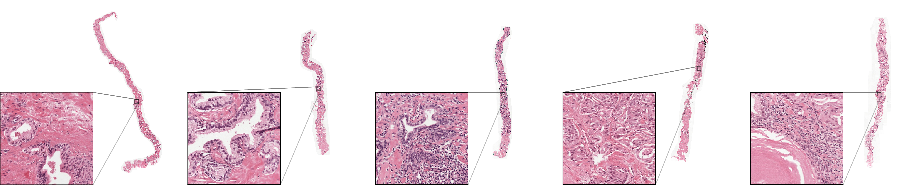
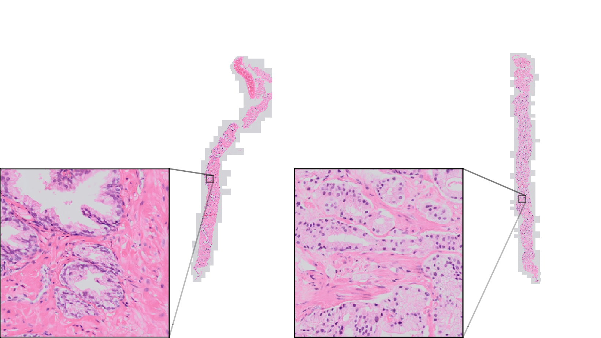
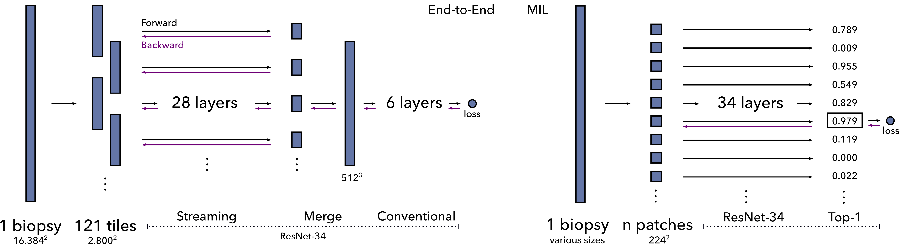
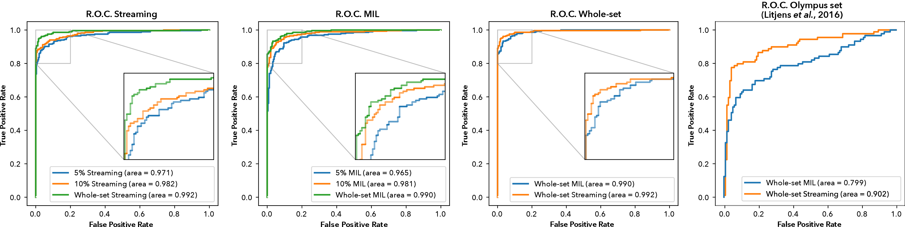
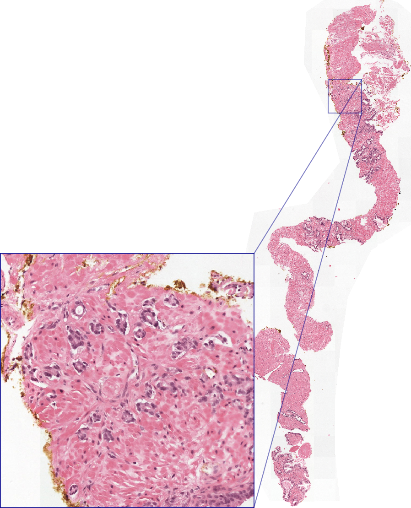

Identified by the streaming model.
Identified by the streaming model.
Prostate cancer is the most prevalent cancer among men in Western countries, with 1.1 million new diagnoses every year. The gold standard for the diagnosis of prostate cancer is a pathologists’ evaluation of prostate tissue.
To potentially assist pathologists deep-learning-based cancer detection systems have been developed. Many of the state-of-the-art models are patch-based convolutional neural networks, as the use of entire scanned slides is hampered by memory limitations on accelerator cards. Patch-based systems typically require detailed, pixel-level annotations for effective training. However, such annotations are seldom readily available, in contrast to the clinical reports of pathologists, which contain slide-level labels. As such, developing algorithms which do not require manual pixel-wise annotations, but can learn using only the clinical report would be a significant advancement for the field.
In this paper, we propose to use a streaming implementation of convolutional layers, to train a modern CNN (ResNet-34) with 21 million parameters end-to-end on 4712 prostate biopsies. The method enables the use of entire biopsy images at high-resolution directly by reducing the GPU memory requirements by 2.4 TB. We show that modern CNNs, trained using our streaming approach, can extract meaningful features from high-resolution images without additional heuristics, reaching similar performance as state-of-the-art patch-based and multiple-instance learning methods. By circumventing the need for manual annotations, this approach can function as a blueprint for other tasks in histopathological diagnosis.
The source code to reproduce the streaming models is available at https://github.com/DIAGNijmegen/pathology-streaming-pipeline.
The current state-of-the-art in computer vision for image classification tasks are convolutional neural networks (CNNs). Commonly, convolutional neural networks are developed with low-resolution labeled images, for example 0.001 megapixels for CIFAR-101, and 0.09-0.26 megapixels for ImageNet2. These images are evaluated by the network and the parameters are optimized with stochastic gradient descent by backpropagating the classification error. Neural networks learn to extract relevant features from their input. To effectively learn relevant features, optimizing these networks requires relatively large datasets3.
In histopathology, due to the gigapixel size of scanned samples, generally referred to as whole-slide images (WSIs), the memory limitation of current accelerator cards prohibits training on the entire image, in contrast to most of the natural images used in general computer vision tasks. As such, most networks are trained on tiny patches from the whole-slide image. Acquiring labels for these patches can be expensive. They are generally based on detailed outlines of the classes (e.g., tumor regions) by an experienced pathologist. This outlining is not done in clinical practice, and is a tedious and time-consuming task. This limits the dataset size for training models. Also, we will need to create these annotations for every individual task.
Besides time constraints, the diagnosis also suffers from substantial inter-observer and intra-observer variability4. For prostate cancer, pathologists report the Gleason grading scheme5. Prognostically interesting growth patterns are categorized, resulting in three levels of aggressiveness. When cancer is present, the reports will mention a Gleason score, a combination of the two most informative growth patterns. These are the most common patterns or the highest pattern. There is disagreement in the detection of prostate cancer, as in the grading using the Gleason scheme. Since pathologists can disagree between therapeutically relevant growth patterns and the presence of a tumor, there are clinically relevant consequences per individual case.
However, if we could circumvent labeling on a patch level, clinically evaluated biopsies could be cheaply labeled using their clinical reports. These reports contain all relevant information for clinical decisions, and are thus of large value for machine learning algorithms.
In this paper we will focus on prostate cancer detection, determining whether a biopsy contains cancerous glands or not. The diagnosis of prostate cancer—the most prevalent cancer for men in Western countries—is established by detection on histopathological slides by a pathologist. The microscopy slides containing cross-sections of biopsies can exhibit morphological changes to prostate glandular structures. In low-grade tumors, the epithelial cells still form glandular structures; however, in the case of high-grade tumors, the glandular structures are eventually lost6.
In the presence of cancer, the percentage of cancerous tissue in a prostate biopsy can be as low as 1%, the evaluation of the biopsies can be tedious and error-prone, causing disagreement in the detection of prostate cancer, as in the grading using the Gleason scheme4.
Besides substantial inter-observer and intra-observer variability, diagnosing prostate cancer is additionally challenging due to increasing numbers of biopsies as a result of the introduction of prostate-specific antigen (PSA) testing7. This number is likely to increase further due to the aging population. In the light of a shortage of pathologists8, automated methods could alleviate workload.
To reduce potential errors and workload, recent work9–15, has shown the potential to automatically detect prostate cancer in biopsies. These studies either use expensive, pixel-level annotations or train CNNs with slide-level labels only, using a patch-based approach.
One popular strategy is based on multiple-instance-learning (MIL)16–18. In this approach, the whole-slide image (WSI) is subdivided into a grid of patches. The MIL assumption states that in a cancerous slide (‘positive bag’), at least one patch will contain tumorous tissue, whereas negative slides have no patches containing tumour. Under this assumption, a CNN is trained on a patch-level to find the most tumorous patch.
However, this approach has several disadvantages19. First, this method only works for tasks where the label can be predicted from one individual patch and a single adversarial patch can result in a false positive detection. Second, it is essentially a patch-based approach, therefore, the size of the patch constrains the field-of-view of the network.
In this paper, we propose a novel method, using streaming20, to train a modern CNN (ResNet-34) with 21 million parameters end-to-end to detect prostate cancer in whole-slide images of biopsies. We also investigate the use of transfer learning with this approach. This method does not suffer from the same disadvantages as the aforementioned approaches based on MIL: it can use the entire content of the whole-slide image for its prediction and the field-of-view is not limited to an arbitrary patch-size. We compare our approach against the methods by Campanella et al.10 and Bulten et al.9. Since deep learning algorithm in computational pathology can suffer from bad generalization towards other scanners21, we evaluated the generalization of the MIL- and streaming-trained ResNet-34 on additional biopsies acquired with a different scanner, previously used by Litjens et al.12.
The streaming implementation allows us to train a convolutional neural network directly on entire biopsy images at high-resolution (268 megapixels) using only slide-level labels. We show that a state-of-the-art CNN can extract meaningful features from high-resolution images using labels from pathology reports without additional heuristics or post-processing. Subsequently, we show that transfer learning from ImageNet performs well for images that are 5000x bigger than the original images used for training (224x224), improving accuracy en decreasing train time.


For prostate cancer detection, previous works have used more traditional machine learning (i.e., feature-engineering) approaches22–24. Recently, researchers transitioned to using deep-learning-based methods for the detection of cancer10,12. Besides detection, research on prostate cancer grading has also been published9,13,14.
In this work, we train on labels for individual biopsies. Since in other work, the memory of the accelerator restricts the input size of the image, published methods are based on searching relevant patches of the original slide10,25–28, or compressing the slide into a smaller latent space29.
We explicitly compare against the state-of-the-art method from Campanella et al.10. As mentioned before, their multiple-instance-learning approach is based on the single most-informative patch, and thus leads to a small field-of-view for the network, and potential false positives because of a few adversarial patches. To circumvent some of these problems, Campanelle et al.10, tried to increase the field-of-view to multiple patches using a recurrent neural networks with some improvement. Their system achieved an area-under-the-receiver-operating curve (AUC) of 0.986. the aggregation method increased the AUC to 0.991. To make the comparison fair, we trained a ResNet-34 network architecture for both methods. However, when training end-to-end, the context of the whole image is automatically taken into account.
Campanella et al. showed that performance decreases when using smaller datasets, concluding that at least 10,000 biopsies are necessary for a good performance. Since they did not use data augmentation (probably because of the big dataset at hand), we investigated if we could reach similar performances with smaller dataset sizes using data augmentation.
Since the mentioned implementation of multiple-instance-learning only considers one patch, which may be less efficient, others26,27 improved the method by using multiple resolution patches and attention mechanisms. Li et al. trained two models on low and high resolution patches, only patches that were predicted as suspicious by the lower resolution model were used to train the higher resolution model. Additionally, to calculate the attention mechanisms, all patches need to be kept in memory, limiting the size of the patches. Lu et al.26 showed that, additionally to attention mechanisms, a frozen model pretrained on ImageNet decreases training time and improves data efficiency. We also use ImageNet weights, but by using the streaming-implementation of convolutions, can unfreeze the model and train the whole network end-to-end. However, in both papers, no comparison to the original method of Campanella et al. was performed.
We used the same dataset as Bulten et al.9, we will briefly reiterate the collection of the dataset here. We built our dataset by retrospectively collecting biopsies and associated pathology reports of patients. Subsequently, we divided the patients between training, validation, and test set. As standard practice, we optimized the model using the training set and assessed generalization using the validation set during development. After development, we evaluated the model on the test set. The dataset, except for the test set, is publicly available as a Kaggle challenge at https://www.kaggle.com/c/prostate-cancer-grade-assessment. An additional set, termed Olympus set, was used for evaluation with a different scanner, originally extracted by Litjens et al12.
We retrieved pathologists reports of prostate biopsies for patients with a suspicion of prostate cancer, dated between Jan 1, 2012, and Dec 31, 2017, from digital patient records at the Radboud University Medical Center, excluding patients who underwent neoadjuvant or adjuvant therapy. The local ethics review board waived the need for informed consent (IRB approval 2016–2275).
After anonymization, we performed a text search on the anonymized pathology reports to divide the biopsies into positive and negative cases. Afterward, we divided the patient reports randomly into training, validation, and test set. By stratifying the biopsies on the primary Gleason score, we retrieved a comparable grade distribution in all sets. From the multiple cross-sections which were available per patient, we selected the standard hematoxylin-and-eosin-stained glass slide containing the most aggressive or prevalent part of malignant tissue for scanning.
We digitized the selected glass slides using a 3DHistech Pannoramic Flash II 250 (3DHistech, Hungary) scanner at a pixel resolution of \(0.24 \mu m\). Since each slide could contain one to six unique biopsies, commonly with two consecutive sections of the biopsies per slide, trained non-experts coarsely outlined each biopsy, assigning each with either the reported Gleason score, or labeling negative, based on the individual biopsy descriptions in the pathology report.
We collected 1243 glass slides, containing 5759 biopsies sections. After division, the training set consisted of 4712 biopsies, the validation set of 497 biopsies, and the test set of 550 biopsies (Table 1, Fig. [fig:example]). We extracted the individual biopsies from the scanned slides at a pixel resolution of \(0.96 \mu m\), visually approximately equivalent to 100x total magnification (i.e., 10x microscope objective with a standard 10x ocular lens). Subsequently, we trimmed the whitespace around the tissue using a tissue-segmentation neural network30.
To determine a strong reference standard, three specialized pathologists reviewed the slides in three rounds. In the first round, each pathologist graded the biopsies independently. In the second round, each biopsy for which no consensus was reached in the first round, consensus was regraded by the pathologist whose score differed from the other two, with the help of the pathologist’s first score and the two anonymous Gleason scores of the other pathologists. In the third round, the pathologists discussed the biopsies without consensus after round two. In total 15 biopsies were discarded by the panel as they could not be reliably graded, resulting in a total test set size of 535 biopsies. See9 for a complete overview of the grading protocol.
To test our method with smaller datasets, we sampled 250 (5%) and 500 (10%) biopsies from the training set. Half of the cases in the new sets were negatives. For the positive biopsies, we stratified on primary Gleason grade and sampled equal amounts of each. Thus, we kept the distribution of the positive biopsies equal over all the datasets. We used the 5% (250 biopsies) and 10% (500 biopsies) datasets for training. The validation- and test-sets were equal to the ones used in the development of the model on the whole set.
| Dataset | Total | Negative | 3 | 4 | 5 |
|---|---|---|---|---|---|
| Training set | 4712 | 16% | 32% | 45% | 7% |
| Validation set | 497 | 39% | 23% | 29% | 9% |
| 10% set | 500 | 50% | 17% | 17% | 17% |
| 5% set | 250 | 51% | 16% | 16% | 16% |
| Test set | 535 | 47% | 25% | 19% | 9% |
| Olympus set | 205 | 58% | 25% | 11% | 4% |
For the Olympus set, we used the slides of Litjens et al., 201612. That set contained 255 glass slides, scanned using an Olympus VS120-S5 system (Olympus, Japan). In comparison to the original paper, we used all biopsies on a negative slide, instead of only one, resulting in 291 biopsies (Fig. [fig:olympusexample]). Since patients in this set were biopsied in 2012, there was a small overlap with the primary dataset used in this paper. We excluded 86 biopsies from 53 duplicate patients, resulting in a set of 205 biopsies.
We trained a ResNet-3431 convolutional neural network. Since the individual biopsy images differ in size, we padded or center/cropped them to 16384\(\times\)16384 input. 99% of our dataset biopsies fitted within this input size. Since padding small biopsies results in a lot of whitespace, we changed the final pooling layer of ResNet-34 to a global max-pool layer.
For regularization, we used extensive data augmentation. To make augmentation of these images feasible with reasonable memory usage and speed, we used the open-source library VIPS32. Elastic random transformation, color augmentation (hue, saturation, and brightness), random horizontal and vertical flipping, and rotations were applied. We normalized the images based on training dataset statistics.
We initialized the networks using ImageNet-trained weights. As an optimizer, we used standard SGD (learning rate of \(2e-4\)) with momentum (0.9) and a mini-batch size of 16 images. Because when using streaming, we do not have a full image on the GPU, we cannot use batch normalization, thus we froze the batch normalization mean and variance, using the transfer-learned ImageNet running mean and variance. We randomly oversampled negative cases to counter the imbalance in the dataset33.
For the experiments with random weights, we initialized the networks using He et al.34. We also used mixed precision training35 to speed up training since these networks needed more epochs to convergence.

Most convolutional neural network architectures trained for a classification task require more memory in the first layers than in the latter because of the large feature maps. Our previously published method termed ‘streaming’20 circumvents these high memory requirements in the first layers by performing the operations on a tile-by-tile basis. This method is possible because CNNs use small kernels; hence the result at any given location is only defined by a small area of the input. This area is called the field-of-view. Since the field-of-view at the beginning of a network is vastly smaller than the full input image, we can use tiles (which have to be bigger than the field-of-view) to perform the convolutions serially. Thereby only requiring the amount of memory for the calculation on a single tile instead of the whole input image. After streaming, we concatenate the tile outputs to retrieve the complete intermediate feature map of the last streamed layer. This complete feature map is equal to the feature map we would get when training on a infinite-memory GPU.
During the forward pass of these memory-heavy first layers, we keep the final layer output and remove the output of the other intermediate layers, to save memory. We stream as many layers as needed until the last streamed layer’s output can fit into GPU memory. This feature map can subsequently be fed through the rest of the neural network at once, resulting in the final output.
For the backward pass, we can use a similar implementation. The last layers, until the last streamed layer, can be backpropagated as usual. Then, we correctly tile the gradient of the last streamed layer’s output. We use these gradient tiles for tile-by-tile backpropagation of the streamed layers. Leveraging the input tile, we recalculate the first layers’ intermediate feature maps with a forward pass (this is commonly called gradient checkpointing36. With the recalculated features and the gradient tile, we can finish the backpropagation for the respective tile. We perform this for every tile. This way, we can recover the gradients of all parameters, as would be the case if training with the original input image. See Figure [figure:streamingSGD] for a graphical representation of the methods.
To train the ResNet-34, we streamed with a tile size of 2800\(\times\)2800 (Fig. [fig:memrelation]) over the first 28 layers of the network. After these layers, the whole feature map (with dimensions 512\(\times\)512\(\times\)512) could fit into GPU memory. It is possible to use the streaming implementation for more layers of the network, however, to improve speed it is better to stream until the feature map is just small enough. Finally, we fed the map through the remaining six layers to calculate the final output.
For the experiments with random weights in mixed precision, due to the decrease in memory usage, we could use a tile size of 3136\(\times\)3136 to increase speed, and decrease the number of streamed layers to the first 27.
In transfer learning, often the first layers are treated as a feature extraction algorithm. After the feature extraction part, the second part is trained for the specific task37. Since the domain of histopathology differs significantly from the natural images in ImageNet, we froze the first three (of the four) residual blocks of the network (the first 27 layers) as feature extractor, only training the last block for our task. This also has the benefit of training faster, since we do not need to calculate gradients for the first layers. After 25 epochs, all the networks were stabilized and stopped improving the validation loss, showing slightly lower train losses.
From these epochs, we picked a checkpoint with a low validation loss to resume fine-tuning the whole network, unfreezing the weights of the first three residual blocks. Due to the relatively small validation set, the loss curve was less smooth than the training loss curve. To account for a sporadic checkpoint with a low loss, we calculated a moving average over five epochs. From these averages, we picked the window with the lowest loss, taking the middle checkpoint of the averaging window.
Starting from this checkpoint, we fine-tuned the whole network with a learning rate of \(6e-5\). After approximately 50 epochs, all the networks stopped improving. For inference, we choose the checkpoints based on a moving average of five epochs with the lowest validation set loss. We averaged the weights of these checkpoints to improve generalization38.
For the streaming experiments with random weights, we used the exact same training schedule except for the learning rate. The loss would go to infinity in the first few batches. When training from scratch, we could not use the first layers as feature extractor. We fine-tuned the whole network with a learning rate of \(1e-5\) requiring 100 epochs until the validation loss did stabilized. We subsequently lowered the learning rate to \(3e-6\) for 200 epochs after which the validation loss stopped improving.
The optimization and training procedure was fully conducted using the validation set, the test set, and the Olympus set were untouched during the development of the model.
Gradient accumulation is a technique to do a forward and backward pass on multiple images in series on the accelerator card, and averaging the parameter gradients over those images. Only after averaging, we perform a gradient descent step. Averaging the gradients over multiple images in series results in effectively training a mini-batch of these multiple images, while only requiring the memory for one image at a time. We used gradient accumulation over multiple biopsies to achieve an effective mini-batch size of 16 images.
We trained over multiple GPUs by splitting the mini-batch. For the streaming experiments, we used four GPUs (either NVIDIA RTX 2080ti or GTX 1080ti).

As a baseline, we implemented the multiple-instance-learning method as described in10.
This method divides the images into a grid of smaller patches with the assumption that an individual patch could determine the image-level label. The task is to find the most informative patch. In our binary detection task, the most informative patch is determined by the patch with the highest probability of tumor. If there is a patch with a high probability of tumorous tissue, the whole biopsy is labeled tumorous.
We train such a model, per epoch, in two phases. The first phase is the inference phase, where we process all the patches of a biopsy, thereby finding the patch with the highest probability. This patch gets assigned the image-level label. Then, in the training phase, using only patches with the highest probability (the top-1 patch), the model parameters are optimized with a loss calculated on the patch probability and the label.
We followed the implementation from Campanella et al.10, but tweaked it for our dataset sizes. We used standard SGD (learning rate of \(1e-5\)) with momentum (0.9) with a mini-batch size of 16 images. We froze the BatchNormalization mean and variance, due to the smaller mini-batch size and to keep the features equal between the inference phase and the training phase. Equally, we oversampled negative cases to counter the imbalance in the dataset, instead of weighting33.
We updated the whole model for 100 epochs when transfer learning, and 200 epochs when training from random weights. From these epochs, we picked the checkpoint with the lowest loss using the same scheme as the streaming model. Afterward, we trained for another 100 epochs with a learning rate of \(3e-6\). The networks trained from random initialization on the 10% and 5% required 300 epochs. We again choose the checkpoint based on the lowest validation set loss, using a moving average of 5 epochs. We also used weight averaging for these checkpoints.
For regularization, we used the same data augmentation as the streaming model. We made sure that the same augmented patch was used in the inferencing and training phase. We used ImageNet statistics to normalize the patches.
The quantitative evaluation of both methods is performed using receiver-operating characteristic (ROC) analysis. Specifically, we look at the area under the ROC curve. To calculate a confidence interval, we used bootstrapping. We sampled the number of the biopsies in the set, with replacement, and calculated the area under the receiver-operating-curve based on the new sample. Repeating this procedure 10.000 times resulted in a distribution from which we calculated the 95% confidence interval (2.5 and 97.5 percentile)
To assess the correlation of certain regions to the cancerous label, we created heatmaps for both techniques. For MIL, we used the patch probabilities. For streaming, we used sensitivity maps using SmoothGrad39. As implementation of SmoothGrad, we averaged 25 sensitivity maps on Gaussian-noise-augmented versions of a biopsy. We used a standard deviation of 5% of the image-wide standard deviation for the Gaussian noise. As a comparison, we show pixel-level segmentations from the model published in Bulten et al.9 as well.
In addition, we did a thorough analysis of the false positives and negatives of both the MIL and the streaming methods.
We performed three experiments for both methods using three datasets. One experiment on all the data, and two on subsampled training sets, the 10% (500 biopsies) and 5% (250 biopsies) datasets.
| Dataset | Method | AUC |
|---|---|---|
| Whole set | Streaming | 0.992 (0.985–0.997) |
| MIL | 0.990 (0.984–0.995) | |
| Bulten et al.9 | 0.990 (0.982–0.996) | |
| 10% set | Streaming | 0.982 (0.972–0.990) |
| MIL | 0.981 (0.970–0.990) | |
| 5% set | Streaming | 0.971 (0.960–0.982) |
| MIL | 0.965 (0.949–0.978) | |
| Olympus set | Streaming | 0.909 (0.863–0.949) |
| MIL | 0.799 (0.732–0.861) |
| Dataset | Method | AUC |
|---|---|---|
| Whole set | Streaming | 0.967 (0.952–0.980) |
| MIL | 0.918 (0.894–0.941) | |
| 10% set | Streaming | 0.924 (0.900–0.945) |
| MIL | 0.899 (0.871–0.924) | |
| 5% set | Streaming | 0.915 (0.889–0.939) |
| MIL | 0.862 (0.831–0.892) |
On the whole dataset, the streaming model achieved an AUC of 0.992 (0.985–0.997) and the MIL model an AUC of 0.990 (0.984–0.995). Interestingly, our models trained on the whole dataset reached similar performance to previous work on this dataset9, which utilized a segmentation network trained using dense annotations obtained in a semi-supervised fashion.
For streaming, the performance on the smaller dataset sizes are similar between the two. 5% dataset has an AUC of 0.971 (0.960–0.982) for 5% and 0.982 (0.972–0.990) for 10% (Table 2). The models trained with more data generalize better (Fig. [figure:ROCcomparison]).
Also for multiple-instance learning there is a clear improvement going from a model trained on the smallest dataset size, with an AUC of 0.965 (0.949–0.978), increasing to 0.981 (0.970–0.990) on the 10% dataset.
There seems to be a trend that the MIL model performs slightly worse (Fig. [figure:ROCcomparison]), however, this difference falls within the confidence intervals.
In the experiments trained from random weights, there is a larger separation between the methods, without overlap of the confidence intervals. Streaming achieves an AUC of 0.967 (0.952–0.980) when using the whole set (Table 3) in comparison to MIL with 0.918 (0.894–0.941). For the 10% set using streaming also results in higher metrics 0.924 (0.900–0.945) versus 0.899 (0.871–0.924). Finally, the 5% set gets an AUC of 0.915 (0.889–0.939) for streaming and 0.862 (0.831–0.892) for MIL.
In general, the areas identified by MIL and streaming in the heatmaps correspond well to the pixel-level segmentations from Bulten et al., showing that both methods pick up the relevant regions for cancer identification (Figure [fig:heatmaps]). Most errors of the models seem to be due to normal epithelium mimicking tumorous glands in the case for false positives, and the small size of some tumorous regions as a possible reason for the false negatives. (Table 4)
For the Olympus set, existing of biopsies scanned by the Olympus VS-system, there is a larger separation between the methods. Streaming reaches an AUC of 0.909 (0.863–0.949), with MIL scoring 0.799 (0.732–0.861). For this dataset, MIL has 36 false negatives versus 20 for streaming, and 8 false positive versus 5 from streaming.
Identified by the MIL model.
Identified by the streaming model.
Small tumorous glands mimicking vessels. Missed by both models. Very limited amount of tumor
(four glands), missed by the streaming network.
| False positives | Streaming (5) | MIL (13) |
|---|---|---|
| Normal mimicking tumor | 2 | 7 |
| Inflammation | 1 | 4 |
| Tissue artefacts | 1 | 1 |
| Bladder epithelium | 1 | 0 |
| Colon epithelium | 0 | 1 |
| False negatives | Streaming (13) | MIL (12) |
| Little amount of tumor | 7 | 4 |
| Tissue artefacts | 3 | 1 |
| Low-grade tumor | 1 | 2 |
| Inflammation-like | 1 | 2 |
| Unclear reason | 1 | 2 |

| Training | Fine-tuning | Inferencing | |
|---|---|---|---|
| Full precision streaming | 32.3 s | 12.5 s | 8.5 s |
| Mixed precision streaming | 17.2 s | 3.6 s | 3.5 s |
| MIL | 0.5 s | n.a. | 0.25 s |
In this paper, we proposed using streaming20 convolution neural networks to directly train a state-of-the-art ResNet-34 architecture on whole prostate biopsies with slide-level labels from pathology reports. We are the first to train such high-resolution (268 megapixels) images end-to-end, without further heuristics. Accomplishing this without the streaming implementation would require a accelerator card with 2.4 terabyte of memory.
We showed it is possible to train a residual neural network with biopsy level labels and reach similar performance to a popular multiple-instance-learning (MIL) based method. Our models trained on the whole dataset reached an AUC of 0.992 for streaming training, and 0.990 for MIL. In addition, we achieved equal performance to a method trained on patch-based labels, with an AUC of 0.9909 on the same dataset. Although, it should be noted that Bulten et al. used weakly-supervised labels, they used a cascade of models to go from epithelium antibody-staining to semi-automatic pixel-level annotations, to generate a model trained at the patch level.
Looking at the failure cases (Table 4), multiple-instance-learning suffers from interpreting normal glands as tumorous (Fig. [fig:errors_pos] and [fig:errors_neg]). We hypothesize this is due to the lack of context, in all but three cases the misclassification was due to one patch. For false negatives, both models fail when there is a small amount of tumor, however the streaming model seems to suffer more from this. A possible solution would be to incorporate attention mechanisms into the network, allowing it to focus to smaller parts of the biopsy.
To study the benefits of transfer learning, we trained the networks from randomly initialized weights according to He et al.34. These networks took longer to converge (approximately 3-4x more iterations needed) and reached lower performances. In this case, MIL is less capable of extracting relevant information from the patches and scores worse than networks trained with streaming, scoring an AUC of 0.918 versus 0.959, respectively. We think training from random weights introduced additional noise in the MIL-training process. Since some biopsies contain cancerous tissue that only falls within a few patches, ImageNet weights can provide a better starting point to find these relevant patches during training. However, when training from random initialization, the noise of the benign patches in a cancerous biopsy may make it harder to learn. When possible, we advise the usage of pretrained network to increase convergence speed and final performance.
MIL performs weaker than the streaming network on the Olympus set, with the main error being misclassifying 36 biopsies with tumor as negative. The external dataset has other color characteristics due to the different scanner used. Since both network have been trained with the same data augmentation, MIL seems to benefit less from this augmentation thus generalizing worse. The improvement seen in generalization on the Olympus set and the trend of higher performance overall suggest that streaming extracts more meaningful features from the same dataset.
In this paper, we compared against a MIL implementation of Campanella et al. In their MIL implementation, only the top-1 patch is used for training per epoch. The method’s data efficiency is reliant on how often different patches are selected in the first phase. Our results on the smallest dataset sample (5%, 250 slides) hint towards reduced data efficiency for MIL. However, the performance on the smaller datasets was already close to optimal, suggesting effective use of the transferred ImageNet-weights. Even though it is not the same test set as in their original paper, this seems to suggest a better performance for smaller datasets than Campanella et al. reported. Hypothetically, this could be due to data augmentation, which they did not use, and increased randomness with smaller mini-batch size in our study.
For MIL, selecting different patches per image, every epoch, is important to circumvent overfitting. We used lower minibatch-sizes, 16 vs 512, and learning rates, \(1e-5\) vs \(1e-4\) as the original implementation10. We saw increased stability in training using smaller mini-batch sizes and learning rates, especially for the smaller datasets, where the whole dataset would otherwise fit in one mini-batch. Lower mini-batch sizes increased some noise, thereby picking different patches per epoch.
The streaming implementation of convolutional neural networks is computationally slower than our baseline. Mainly due to the number (121) and overlap (~650 pixels) of the tiles during backpropagation. For inference new slides, taking into account the preprocessing that needs to happen (roughly 8 seconds for extracting patches or extracting the whole biopsy), MIL takes half the time (8.25 seconds) compared to streaming (16.5 seconds) (Table IV). The most significant difference lies in the train speed, where for full precision, streaming is ~65 times slower than MIL (Table 5). Streaming did require half the number of epochs needed to converge, but the gap is still large. However, an algorithm only needs to be trained once, and the inference speed for both streaming and MIL is fast enough for use in clinical practice.

Improving the speed of the streaming implementation of convolutional operations is of interest. In this work, we improved training speed by first freezing the first layers of the neural network, not having to calculate gradients. Using this training scheme in the multiple-instance-learning baseline resulted in unstable training and worse performance. Further research could focus on decreasing the number of calculations needed by using variable input sizes3 or lower-level implementations that ignore whitespace, such as sparse implementations of convolutions40.
Streaming training with high-resolution images opens up the possibility to quickly gather large datasets with labels from pathology reports to train convolutional neural networks. Although linking individual biopsies to the pathology report is still a manual task, it is more efficient than annotating the individual slides. However, some pathology labs will manufacture one slide per biopsy and report systematically on these individual biopsies. Training from a whole slide, with multiple biopsies, is left for future research.
Since multiple-instance-learning, in the end, predicts the final label on a single patch, tasks that require information from different sites of the biopsy could be hard to engineer in this framework. For example, in the Gleason grading scheme, the two most informative growth patterns are reported. These patterns could lie on different parts of the biopsy, outside of the field-of-view of a single patch. Also, additional growth patterns could be present. The first reported growth pattern of Gleason grading is the most prevalent. Since multiple-instance-learning works patch-based, volumes that span larger than one patch are not used for the prediction. Streaming allows for training complex tasks, such as cancer grading, even with slide-level labels.
Our heatmaps show that indeed the streaming model uses information from multiple regions in the biopsy (Fig. [fig:heatmaps]). Even though our model is not trained on a patch-level, the sensitivity maps highlight similar regions as the MIL method and the segmentation algorithm from Bulten et al. Thus, interestingly, a modern convolutional neural network, originally developed for tiny input sizes, can extract useful information from 268 megapixel images.
Besides allowing the entire slide to inform predictions, streaming training also has the advantage of being able to learn with hard or impossible to annotate global information. For example, in the medical domain, survival prediction can be of great interest. Future work could be to predict survival from histopathology tissue directly. Reliably annotating for this task can be difficult. Since streaming can find patterns and features from the whole image using just the retrospective patient prognosis, this method can be beneficial in automatically finding new relevant biomarkers.
We provide source code of the streaming pipeline at GitHub4. We tried to make it easy to use with other datasets. Additionally to methods used in this paper, we added mixed precision support for even more memory efficient and faster training.